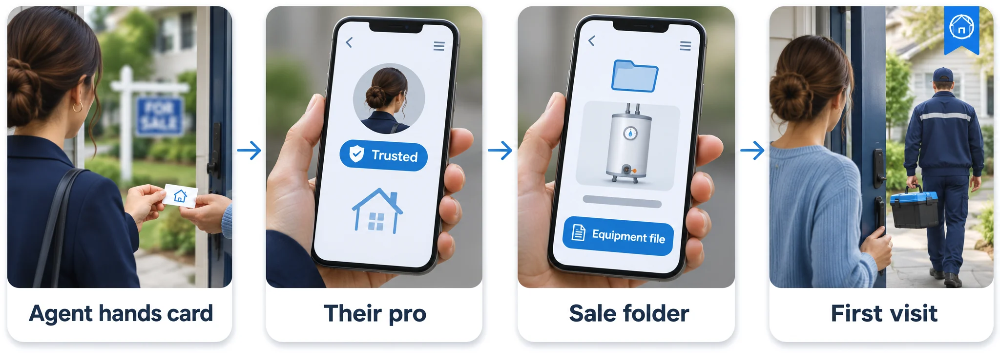
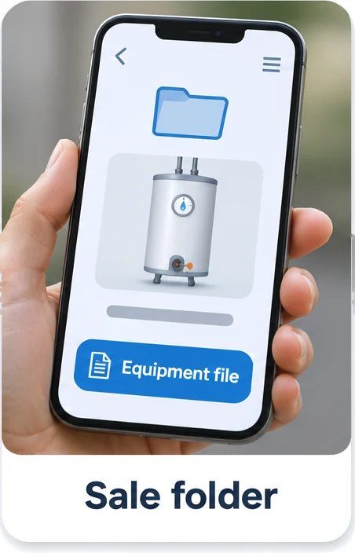

The Agent's Pro





- Problem
- The buyer asks the agent who to call, and gets a marketplace instead of the pro the agent trusts.
- Who has it
- Real estate agents, new owners and the pros agents trust.
- Nearest evidence
- No post found yet. Nearest: Bilt, 2026-11-10